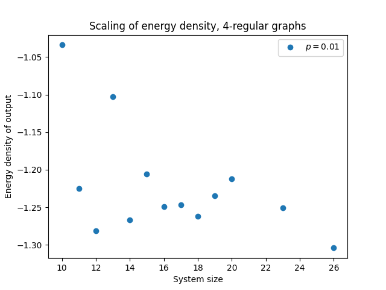
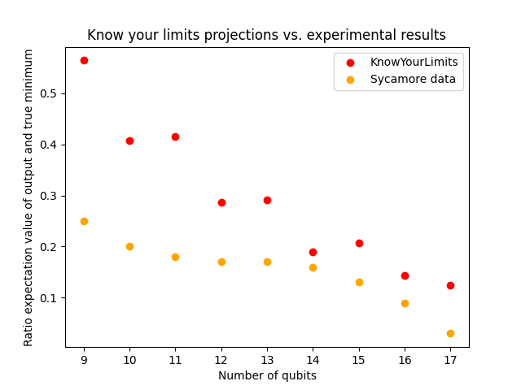

Examples¶
Example: Benchmarking QAOA¶
We will now show how KnowYourLimits can be used to benchmark the performance of QAOA under noise. We will compare the predicted lower bound on the energy of a QAOA circuit with runs of the actual circuit. We will also compare the performance of noisy QAOA with the standard semidefinite relaxation of the problem. To simulate the noisy circuit, we will resort to Cirq.
Let us start by importing the relevant parts of the package:
from annealer_analyser import *
import networkx as nx
from simplified_estimator import *
import cirq
import qsimcirq
from estimator import *
We will try to find the ground state of a random Ising model on \(d\)-regular graph with \(n\) spins. We will define it below:
d=3
n=22
problem_graph=nx.random_regular_graph(d,n=n,seed=2021)
We will now write the code to compile and simulate the noisy QAOA circuit. We will simulate a noisy QAOA circuit on a square grid. The parameters of the QAOA circuit will be set like those suggested by the paper The Quantum Approximate Optimization Algorithm at High Depth for MaxCut on Large-Girth Regular Graphs and the Sherrington-Kirkpatrick Model. There, the authors determine the optimal QAOA parameters for random regular graphs. Their results only hold in the limit of \(n,d\to +\infty\), which is far from the regime considered in this simulation. However, we will use these values as a reasonable ansatz and in order to avoid the optimization step of QAOA. Let us start with compiling the noiseless circuit.
device=pytket.routing.SquareGrid(int(np.sqrt(n))+1,int(np.sqrt(n))+1)
depth=3
gammas=[0.3297, 0.5688, 0.6406]
betas=[0.5500, 0.3675, 0.2109]
circuit=compiled_routed_weighted_qaoa(problem_graph,gammas,betas,device)
We will now define a function that adds layers of local depolarizing noise with depolarizing probability \(p\) to the clean circuit. It outputs the generating the noisy circuit. After that, we will also generate the noisy circuit with depolarizing probability \(p=0.1\).
def clean_to_noisy(circuit,p):
c_noisy = cirq.Circuit()
qubits = sorted(circuit.all_qubits())
for moment in circuit.moments:
c_noisy+=moment
for k in range(0,len(qubits)):
c_noisy+=cirq.depolarize(p).on(qubits[k])
for k in range(0,len(qubits)):
c_noisy+= cirq.measure(qubits[k])
return c_noisy
c_noisy=clean_to_noisy(circuit,0.1)
We are now ready to simulate the noisy circuit using Cirq. We will generate 100 shots and then output the average and the minimum observed energy.
qsim_simulator = qsimcirq.QSimSimulator()
measure_results = qsim_simulator.run(c_noisy, repetitions=100)
results=measure_results.data.to_numpy()
energies=[]
A=nx.to_scipy_sparse_matrix(problem_graph)
for k in range(0,100):
state_final=(-1)**(results[k,:])
x=A.dot(state_final)
y=x.dot(state_final)
energies.append(y/2)
print("Average energy",np.mean(energies))
print("Minimum energy",np.min(energies))
We expect that shallow, noisy quantum circuits satisfy Gaussian concentration. Explaining the concept of Gaussian concentration and why noisy quantum circuits should satisfy it goes way beyond the scope of this example. But it predicts that the energy of the output strings \(E\) should be approximately contained in the interval \([\mathbb{E}(E)- d\sqrt{n},\mathbb{E}(X)+ d\sqrt{n}\). With the choice of \(n,d\) above, this would lead to the prediction that the lowest energy string we will observe should have approximately energy \(\mathbb{E}(X)- 14\), give or take a bit.
Let us now compare this with what KnowYourLimits predicts:
prediction=estimator_energy_QAOA_dep_square(p=0.1,A=A,depth=depth,verbose=1,method='TN')
print("KnowYourLimits average:",prediction,"Lowest energy observed should be roughly:",prediction-np.sqrt(n)*d)
This predicts that the value outputted by noisy QAOA should not be significantly away from -14. We can also compare this to what the standard SDP relaxation outputs. This corresponds to a standard convex relaxation of the problem that can be computed in polynomial time. We will also run the SDP with 100 shots to make a fair comparison.
sdp_energy=SDP_average(problem_graph,100)
print("Expected energy of SDP: ",sdp_energy[0],"Minimum energy",sdp_energy[1])
This outputs a minimal energy of roughly -25. Thus, we see that KnowYourLimits was able to correctly predict that this noisy QAOA circuit would be significantly outperformed by this efficient classical algorithm!
It should be difficult to simulate quantum circuits that are significantly larger than the one in this example with Cirq and a laptop.
However, the estimation methods of KnowYourLimits can still provide useful advice for significantly larger system sizes!
Example: Analysing the effect of limited connectivity¶
In this example we will show how KnowYourLimits can be used to study the impact that the limited connectivity of near-term devices has. Indeed, as the topology of the device does not necessarily match that of the circuit we wish to implement, a constant depth circuit could require a significantly larger depth to be implemented on a device with, say, 2D connectivity.
To that end, we will resort to the estimator_energy_QAOA_dep_square_d_regular() to perform this estimate.
This function compiles a random QAOA circuit to solve MAXCUT on a d-regular graph in a 2D square architecture.
We can then easily write some code that allows us to analyse how the energy density of the output scales as we increase the system size. We will set the local depolarzing rate to \(p=0.001\) and generate 10 samples per system size.
from simplified_estimator import *
import matplotlib.pyplot as plt
import numpy as np
samples=10
p=0.001
initial=10
final=30
final_results=np.zeros(final-initial)
for k in range(0,final-initial):
energies=np.zeros(samples)
for sample in range(0,samples):
energies[sample]=estimator_energy_QAOA_dep_square_d_regular(p=p,n=initial+k,d=4,depth=3,verbose=1,method='TN')
final_results[k]=np.median(energies)/(initial+k)
print(np.linspace(initial,final,final-initial))
plt.scatter(range(initial,final),final_results,label="$p=0.01$")
plt.xlabel("System size")
plt.ylabel("Energy density of output")
plt.legend()
plt.title("Scaling of energy density")
plt.savefig('scaling_energy.png')
In the plot below we can see the scaling of the energy density as we increase the system size:
{kind=link}
Example: Comparison to experiments¶
We can also compare the results of KnowYourLimits to actual experiments! The QAOA algorithm was recently implemented on Google’s Sycamore device. The results were reported in the paper Quantum approximate optimization of non-planar graph problems on a planar superconducting processor. We will now show how KnowYourLimits could have predicted with little effort that the Sycamore would fail to output low-energy strings.
This example will also show how 1-qubit depolarizing noise is a good approximation to the noise affecting the device. This is meant in the sense that this noise model provides us with lower bounds on the energy that are consistent with what is observed in experiments.
We will analyze the performance of the device for solving the SK-model. This is a model with all-to-all connectivity. This means that tensor network methods to compute the partition function will not perform well. However, the system sizes considered in Google’s experiment can easily be analysed by computing the partition function brute force.
To match the experiments, we will compile the circuits to the architecture of Google’s Sycamore device.
Let us now show how to perform this analysis and make predictions for the experiment. We start by importing the relevant packages and KnowYourLimits functions.
import cirq_google as cg
import cirq.contrib.routing as ccr
import cirq as cirq
import networkx as nx
import numpy as np
import matplotlib.pyplot as plt
from simplified_estimator import *
We will now import the connectivity graph of the Sycamore 23 device and conver it to a tket device. We will need to perform this conversion because we use tket to route and compile the circuit to the device.
device_google = cg.Sycamore23.qubits
dev_graph = ccr.gridqubits_to_graph_device(cg.Sycamore23.qubits)
print(dev_graph)
def _qubit_index_edges():
dev_graph = cirq.contrib.routing.gridqubits_to_graph_device(device_google)
for n1, n2 in dev_graph.edges:
yield Node('grid', n1.row, n1.col), Node('grid', n2.row, n2.col)
def _device_to_tket_device():
arc = pytket.routing.Architecture(
list(_qubit_index_edges())
)
return arc
device_google=_device_to_tket_device()
We will now run the code that performs the instances. As the SK-model is a class of randomized instances, we will sample a few and see the median performance of noisy quantum circuits. In this experiment, we will sample 20 instances for each system size. As the Google experiment was run on system sizes ranging from 9 to 17, we will also consider these system sizes
As the original Google paper plots the ratio of the energy achieved by noisy quantum device and the ground state energy, we will also compute this quantity.
This is done by the function estimator_energy_QAOA_dep_device_SK() from KnowYourLimits.
samples=20
ratios=[]
for n in range(9,18):
results=[]
for sample in range(0,samples):
result=estimator_energy_QAOA_dep_device_SK(p=0.006,n=n,device=device_google,depth=3,verbose=1)
results.append(result[1])
ratios.append(np.median(results))
Now we are ready to plot the results of the KnowYourLimits estimate when compared with the data from the actual experiment. The data below is inferred from Fig. 4 of the paper.
results_experiment=[0.25,0.2,0.18,0.17,0.17,0.16,0.13,0.09,0.03]
plt.scatter(range(9,9+len(ratios)),ratios,color='red',label="KnowYourLimits")
plt.scatter(range(9,9+len(ratios)),results_experiment,color='orange',label="Sycamore data")
plt.title("Know your limits projections vs. experimental results")
plt.xlabel('Number of qubits')
plt.ylabel("Ratio expectation value of output and true minimum")
plt.legend()
plt.savefig('know_limits_vs_google2.png')
The output of one run of the code is shown below:
{kind=link}
We see that, as expected, KnowYourLimits provides us with an upper-bound on the actual value of the energy outputted by the device.